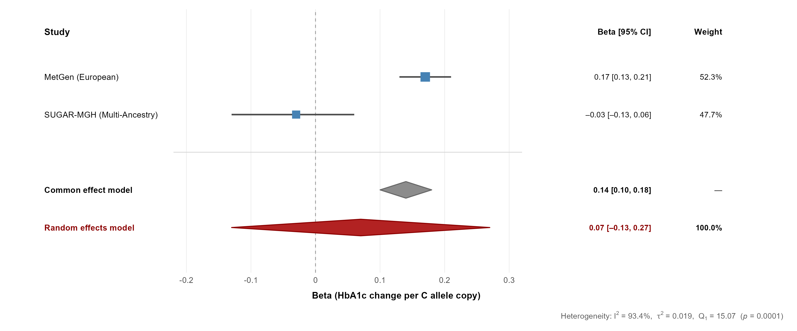
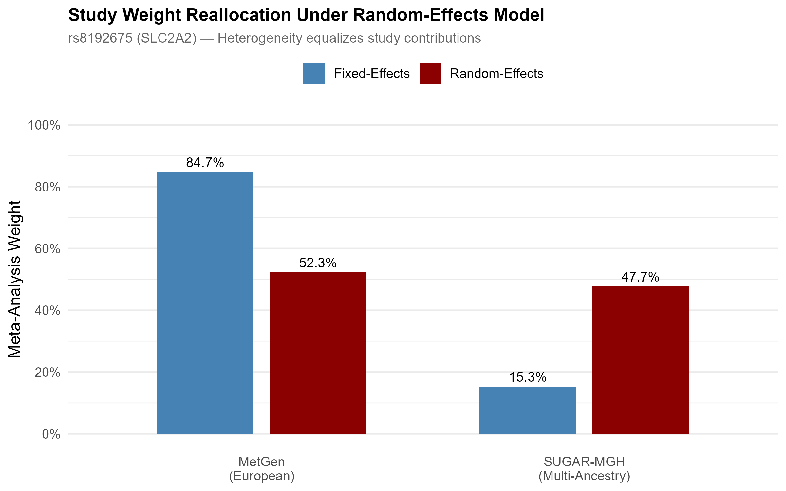
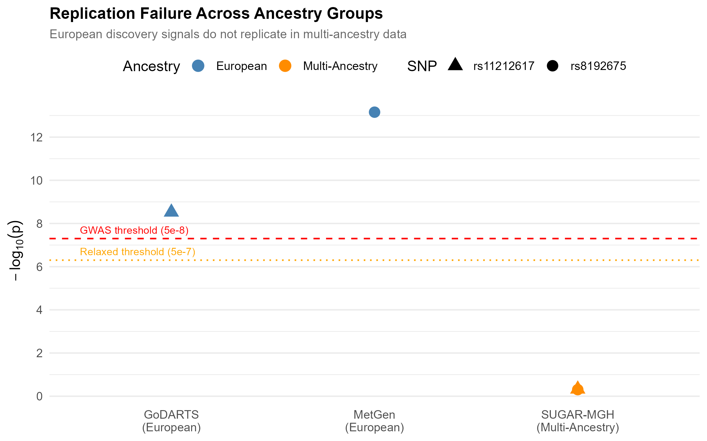

Trans-Ethnic Meta-Analysis of Metformin Glycemic Response
The question
Metformin is the first-line drug for type 2 diabetes, yet glycemic response varies widely between patients. Several of the genetic markers used to explain that variation were discovered almost entirely in European-ancestry cohorts, which raises a question precision medicine cannot ignore: do those markers replicate in other populations, or are they European-specific?
I ran a candidate-SNP meta-analysis to find out, focusing on the two best-known markers for metformin response: rs8192675 (SLC2A2) and rs11212617 (near ATM).
Data
Three published GWAS, pulled from the EBI GWAS Catalog, totaling 22,766 participants.
| Study | Ancestry | N | Role |
|---|---|---|---|
| MetGen Consortium | European | 10,577 | Discovery (SLC2A2) |
| GoDARTS / UKPDS | European | 3,920 | Discovery (ATM) |
| SUGAR-MGH | Multi-ancestry | 8,269 | Replication |
SUGAR-MGH was the only study with full genome-wide summary statistics, so I extracted the candidate SNPs by genomic position before loading. To go beyond the two headline variants, I also ran region-based queries across the core metformin pharmacogenes, SLC22A1 (OCT1, hepatic uptake) and SLC47A1 (MATE1, renal excretion), scanning roughly a million rows of summary statistics for any signal in those loci.
Method
The core analysis is an inverse-variance-weighted meta-analysis of the continuous SLC2A2 signal, built around the QC and modeling steps that decide whether a result is trustworthy.
- Allele harmonization. I confirmed effect alleles matched across studies and flipped the SUGAR-MGH ATM estimate to align reference alleles.
- Fixed-effects (IVW) and random-effects (DerSimonian-Laird) models, with Cochran’s Q and I² to quantify between-study heterogeneity.
- Manual derivations verified against
meta::metagen(). I computed the weights, pooled estimates, τ², and Q by hand from first principles and checked them against the package output. They match to four decimals. - Fisher’s combined p-value as a sensitivity analysis, to combine evidence for the ATM SNP where an outcome-scale mismatch (binary OR versus continuous HbA1c) ruled out a formal pooled effect.
- A post-hoc power analysis, to test whether a non-result was actually informative or just underpowered.
Key result
The SLC2A2 effect reverses direction between cohorts: +0.17 HbA1c units per C allele in the European discovery sample, and −0.03 in the multi-ancestry replication sample. That reversal drives the entire finding.

The consequence shows up sharply in the two pooled models:
| Model | Pooled β (HbA1c per C allele) | 95% CI | p-value |
|---|---|---|---|
| Fixed-effects (IVW) | 0.139 | [0.10, 0.18] | 1.35 × 10⁻¹³ |
| Random-effects (DL) | 0.073 | [−0.13, 0.27] | 0.47 |
Heterogeneity is extreme: Cochran’s Q = 15.07, I² = 93.4%, τ² = 0.019. A marker that looks overwhelmingly significant under the homogeneity assumption becomes statistically null once between-study variance is modeled properly.
The mechanism is visible in how the models weight the two studies. Fixed effects lets the larger European study dominate at 84.7%. Random effects, once it accounts for the heterogeneity, equalizes the contributions to roughly 52 / 48, and the signal disappears.

Neither SNP crossed genome-wide significance in the multi-ancestry cohort, even at the relaxed pharmacogenomic threshold. The European discovery signals sit far above the line; the replication attempts sit near zero.

Was the non-replication real, or just underpowered?
This is the question that decides whether the finding means anything, so I answered it directly with a post-hoc power calculation. Given SUGAR-MGH’s precision, its power to detect the European-sized SLC2A2 effect at genome-wide significance was only about 3%. Reaching 80% power would have required roughly 26,000 participants, about three times the sample available.
That result cuts honestly in both directions, which is the point of running it. The non-replication is not clean proof of a true ancestry difference, because the replication cohort was underpowered for a strict genome-wide test. But the effect-direction reversal and the extreme heterogeneity are not artifacts of power, and at a nominal threshold the study was well powered (94%). The most defensible reading is that a single universal effect size is not supported, and that adequately powered multi-ancestry cohorts are needed to say more.
Why it matters
This small analysis mirrors a real problem in global drug development.
- Companion diagnostics. A test built on SLC2A2 genotype alone would perform well in European patients and could mislead for patients of other ancestries.
- Trial diversity. It is a concrete illustration of why regulators have pushed for ancestry diversity in clinical trials. A marker validated in one population may not predict response in another.
- Stratified prescribing. The heterogeneity argues for an ancestry-aware rather than universal model of metformin pharmacogenetics.
Limitations
I would rather state these than have a reviewer find them. Only two studies were available for the primary pooled estimate (k = 2), which limits the precision of the τ² estimate. The association-only files restricted me to a candidate-SNP rather than a genome-wide approach. The ATM comparison is descriptive only, because of the binary-versus-continuous outcome mismatch. And as the power analysis makes explicit, the replication cohort was underpowered for a strict genome-wide test.
Links
- 📄 Read the full report covers methods, the hand-derived calculations, the pharmacogene scan, and the full discussion
- 💻 Code on GitHub
- 🗄️ Data: EBI GWAS Catalog accessions
GCST004522,GCST000927,GCST90269867